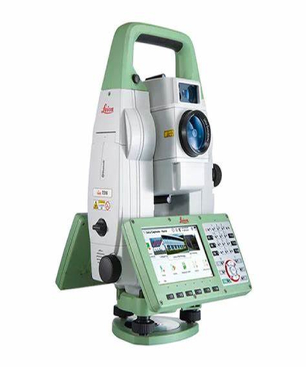
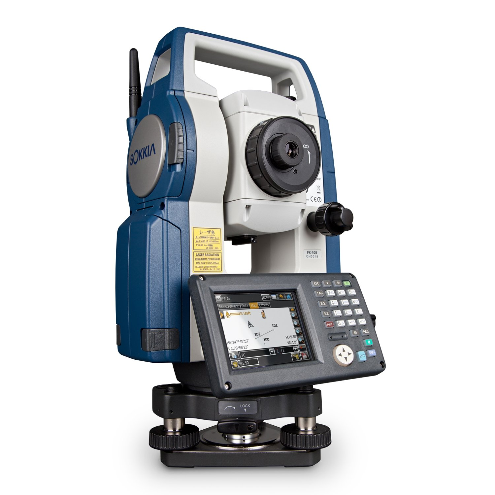
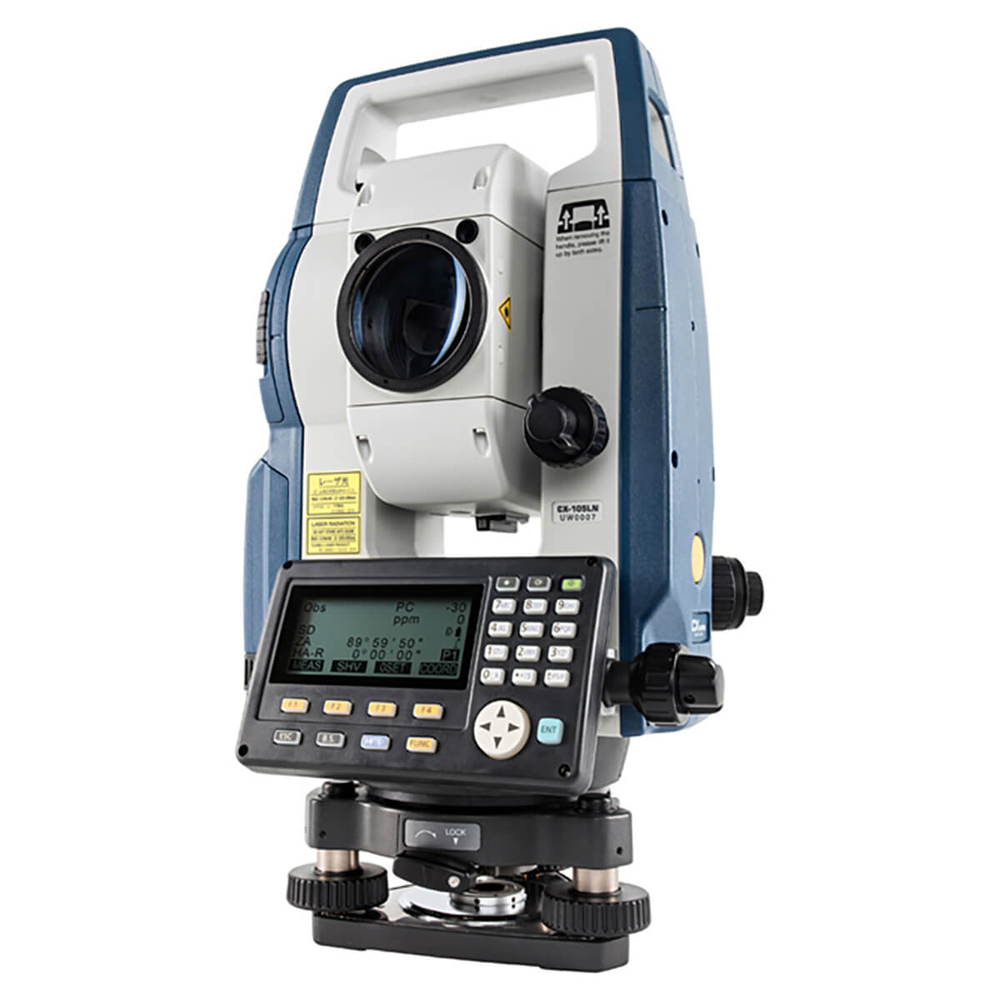
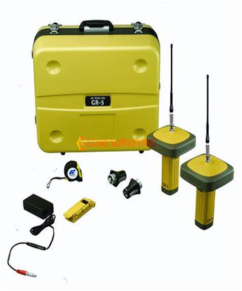
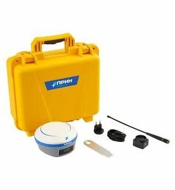

Leica TS16
Характеристи:
- Угловая точность 1”–5”
- Дальномер до 1000м без отражателя
- Полевое ПО Leica Captivate
Роботизированный электронный тахеометр, предназначенный для измерения горизонтальных и вертикальных углов, расстояний и координат объектов.
Цена: 3 257 460 ₽

Leica TS10
Характеристи:
- Точность 1”/2”/3”/5”
- Сенсорный экран
- Надежная ежедневная съемка
Leica TS10 — это инженерный тахеометр (входит в линейку Leica FlexLine), который сочетает высокую точность, автоматизацию полевых работ и мощный инструмент для обработки данных прямо в поле.
Цена: 2 200 460 ₽

Sokkia FX-201
Характеристи:
- Точность 1”
- Безотражательный режим
- Надежная защита корпуса
Это компактный и высокоточный прибор для строительных и геодезических работ, где важны строгие допуски. Его активно используют в строительстве, топографии.
Цена: 1 900 000 ₽

Sokkia CX-105
Характеристи:
- Точность 5”
- Дальномер до 1000м без отражателя
- Легкий и компактный
CX-105 — это электронный безотражательный тахеометр. Модель получилась универсальной: она сочетает высокую точность, скорость работы и удобный интерфейс.
Цена: 780 000 ₽

Topcon GR-5
Характеристи:
- GNSS GPS/GLONASS
- Полевой комплект
- Надежный корпус для полевых работ
Topcon GR-5 — это мультисистемный геодезический GNSS-приёмник, предназначенный для высокоточного определения координат точек на земной поверхности.
Цена: 1 557 460 ₽

PrinCe i80 Pro
Характеристи:
- IMU-наклон
- Многосистемный GNSS
- Быстрая инициализация
PrinCe i80 Pro — это профессиональный ГНСС-приёмник для геодезических работ, созданный для эффективной съёмки в сложных условиях: в плотной городской застройке, холмистой местности.
Цена: 1 257 460 ₽